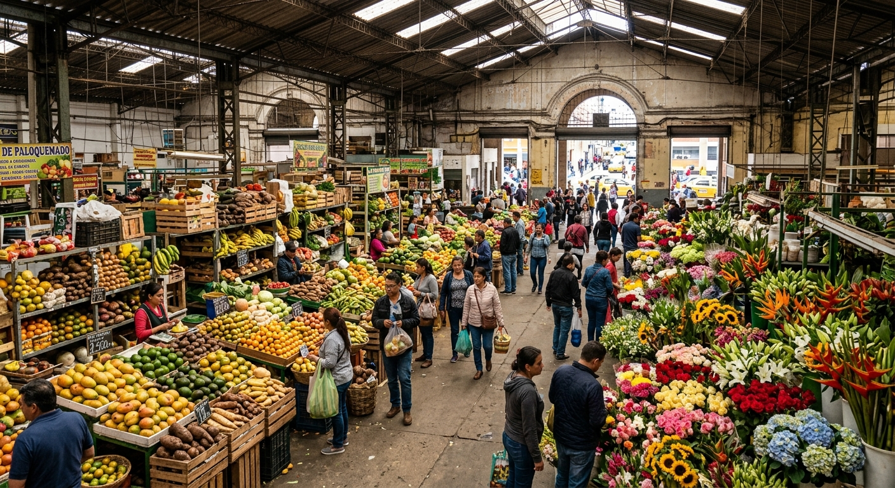

La fruta que es más que fruta
No es solo una libra de papa o un paquete de uchuvas, es nuestra cultura gastronómica.
"Este es un recorrido por uno de los lugares más emblemáticos de Bogotá, el mismo que ofrece una despensa viva"
Un acervo dedicado a los productos, sabores y tradiciones al rededor de la Plaza de Paloquemado.

¿Por que realizar una pagina dedicada a la Plaza de Paloquemado?
No es solo una libra de papa o un paquete de uchuvas, es nuestra cultura gastronómica.
"Este es un recorrido por uno de los lugares más emblemáticos de Bogotá, el mismo que ofrece una despensa viva"
| Fruta | Temporada alta | Región de origen | Uso tradicional |
|---|---|---|---|
| Uchuva | Todo el año | Boyacá, Cundinamarca | Postres, jugos, consumo directo |
| Papa criolla | Marzo - Junio | Altiplano cundiboyacense | Ajiaco, papas saladas, sudado |
| Curuba | Octubre - Diciembre | Cundinamarca, Tolima | Jugos, dulces, postres |


Es una recopilación cultural sobre los productos vendidos en la Plaza de Paloquemado.
Sí, la plaza está abierta en la calle 19 con carrera 27, al lado de Mall Plaza.
A través del formulario en la sección de contacto, donde puedes compartir una parte de la plaza (historias, frutas que falten o fotos).